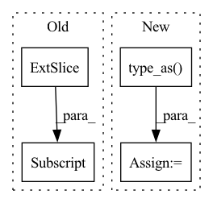

Pattern ID :26603
Before Change
self.C_in = C_in
def forward(self, features, num_voxels, coors=None):
points_mean = features[:, :, : self.C_in] .sum(
dim=1, keepdim=False
) / num_voxels.type_as(features).view(-1, 1)
return points_mean.contiguous()After Change
:feature FloatTensor of shape (N, K, C)
:return FloatTensor of shape (N, C)
denominator = occupancy.type_as( feature) .view(-1, 1)
feature = (feature.sum(1) / denominator).contiguous()
return feature
In pattern: SUPERPATTERN
Frequency: 3
Non-data size: 4
Instances Fragment ID: 79674537
Project Name: jhultman/vision3d
Commit Name: 1736771fde51c478418ee6b5bb8b783fb604b064
Time: 2020-02-09
Author: 27909223+jhultman@users.noreply.github.com
File Name: pvrcnn/backbone.py
M Class Name: VoxelFeatureExtractor
N Class Name: VoxelFeatureExtractor
M Method Name: forward(3)
N Method Name: forward(4)
M Parent Class: nn.Module
N Parent Class: nn.Module
M File Name: pvrcnn/backbone.py
N File Name: pvrcnn/backbone.py
M Start Line: 42
M End Line: 46
N Start Line: 49
N End Line: 51
Before Change
self.scaler = scaler
def forward(self, batch_x, batch_y, batch_x_mark, batch_y_mark):
decoder_input = torch.zeros_like(batch_y[:, -self.hparams.pred_len :, :] ).type_as(batch_y)
decoder_input = torch.cat([batch_y[:, : self.hparams.label_len, :], decoder_input], dim=1)
outputs = self.model(batch_x, batch_x_mark, decoder_input, batch_y_mark)
if self.hparams.output_attention:After Change
if self.hparams.padding == 0:
decoder_input = torch.zeros((batch_y.size(0), self.hparams.pred_len, batch_y.size(-1))).type_as(batch_y)
else: // self.hparams.padding == 1
decoder_input = torch.ones((batch_y.size(0), self.hparams.pred_len, batch_y.size(-1))).type_as( batch_y)
decoder_input = torch.cat([batch_y[:, : self.hparams.label_len, :], decoder_input], dim=1)
outputs = self.model(batch_x, batch_x_mark, decoder_input, batch_y_mark)
if self.hparams.output_attention:
outputs = outputs[0] Fragment ID: 79674536
Project Name: martinwhl/informer-pytorch-lightning
Commit Name: 35fc041b58c6693f12723b42e3e381c137a2209e
Time: 2021-05-28
Author: asteroid02@126.com
File Name: tasks/forecast.py
M Class Name: InformerForecastTask
N Class Name: InformerForecastTask
M Method Name: forward(5)
N Method Name: forward(5)
M Parent Class: pl.LightningModule
N Parent Class: pl.LightningModule
M File Name: tasks/forecast.py
N File Name: tasks/forecast.py
M Start Line: 33
M End Line: 33
N Start Line: 34
N End Line: 38
Before Change
// determine positive; do not check with == since the labels are floats
pos_mask = labels > 0.5
// get indices of positives, shape: (nnz, ndim)
batch_ind = pos_mask.nonzero()[:, 0]
// select rows of negatives
negative_scores = predictions[batch_ind]
// select positive scores
positive_scores = predictions[pos_mask]After Change
// determine positive; do not check with == since the labels are floats
pos_mask = labels > 0.5
// subtract margin from positive scores
predictions = predictions - pos_mask.type_as( predictions) * self.margin
// divide by temperature
predictions = predictions / self.inverse_softmax_temperature
return super().process_lcwa_scores( Fragment ID: 79674532
Project Name: pykeen/pykeen
Commit Name: d7ee986026065997398ab72152f0365224d9e374
Time: 2022-05-17
Author: berrendorf@dbs.ifi.lmu.de
File Name: src/pykeen/losses.py
M Class Name: InfoNCELoss
N Class Name: InfoNCELoss
M Method Name: process_lcwa_scores(5)
N Method Name: process_lcwa_scores(5)
M Parent Class: CrossEntropyLoss
N Parent Class: SetwiseLoss
M File Name: src/pykeen/losses.py
N File Name: src/pykeen/losses.py
M Start Line: 1358
M End Line: 1368
N Start Line: 1235
N End Line: 1245